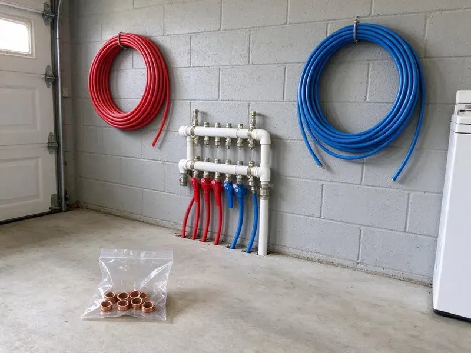

Plumbing Installation in Newport East, RI
From tankless heaters to new service lines, our Newport East, RI plumbers install equipment matched to the water and weather in your area.
- Free Written Estimates
- Same-Week Install Dates
- Local Newport East Plumbers
- Haul-Away Included
Need a New Water Heater or Gas Line in Newport East, RI?
Tell us what you are installing and we will size it and price it.
Complete Plumbing Installation for Newport East, RI Homes
JPN Plumbing sends licensed plumbers to every install, and when the job needs a permit, it is filed before the truck ever pulls into your driveway. We schedule the inspection, meet the inspector and leave the system running. The paperwork comes to you as well. Keep it with the house records, because the next buyer's inspector will ask for it.
Some of what we do:
- New supply and drain lines
- Sump pits, check valves and battery backup pumps
- Gas line and water service line replacement

Additional Plumbing Installation Services in Newport East, RI
We install water heaters, pumps, lines, and fixtures across Newport East, RI with precision workmanship that meets every local code.


Customers
Why Choose JPN Plumbing for Plumbing Installation in Newport East, RI?
Every plumber we send is licensed and insured, and works under the Rhode Island plumbing code every day of the week. We pick pipe and fittings for the water and weather you actually have, not for a catalog photo, and we tell you why we picked them. Brass valves, not pot metal.
- Quality Materials, Name-brand valves and fittings from suppliers we have used for years.
- Clear Pricing, One written quote covering equipment, labor, permit and haul-away.
- Customer Satisfaction, Floors get covered and the work area is cleaned up before we leave.
Citywide Coverage
Our service area covers all of Newport East and well past it. The same licensed plumbers do a simple heater swap and a full system overhaul. One phone number covers both. Most jobs get on the calendar within the week.
Experienced Team
Each installer on our team is licensed and goes through ongoing training whenever the code changes or a manufacturer updates an install spec. They show up in uniform, cover your floors and leave the house cleaner than they found it. Boot covers go on at the door.
Safety-First Approach
Combustion, venting and pressure are where water heater installs go wrong. We install proper venting, a relief line piped to a safe drain point, a sediment trap on the gas supply and a shutoff valve on every job. Those parts cost little. Skipping them costs far more.
Trusted Certified Newport East Plumbing Services Professionals
At JPN Plumbing, we take pride in licensed, certified plumbing services throughout Newport East, RI. Those papers on the wall mean something. Every repair, install and maintenance visit follows strict safety and quality rules, and the plumbers doing the work carry recognized industry credentials.
Call Us Now PHCC Plumbing Contractor Recognition
PHCC Plumbing Contractor Recognition Better Business Bureau (BBB) Accreditation
Better Business Bureau (BBB) Accreditation Angi Certified Pro
Angi Certified Pro ISO 9001 Quality Management Certification
ISO 9001 Quality Management CertificationWhat We Install in Newport East, RI
Sump Pump Installation in Newport East, RI
A sump pump that fails during a storm usually failed months earlier: a stuck float, a seized impeller, a dead check valve or a cord unplugged for the shop vac. We dig the pit to the right depth, set a primary pump sized to the inflow and add a battery backup if you want one. Discharge placement matters most. The discharge gets carried well away from the foundation so the same water is not pumped twice.

Expansion Tank and Sewage Ejector Installs in Newport East, RI
A closed water system has nowhere for heated water to expand, so pressure climbs every single time the heater cycles. The expansion tank takes up that swing so the relief valve stops weeping. A PRV usually means you need one. Fixtures below the sewer line get an ejector system with a sealed basin, a check valve and a vent.
Whole-House Water Softener Installation in Newport East
Blue-green stains on sinks and tubs are a common sign of corrosive water, and treatment can protect the plumbing. Softener sizing comes down to hardness times daily gallons, which tells us how many grains the resin has to remove between regenerations. A unit sized too small regenerates constantly and wastes salt. We set the drain line with an air gap. Programming follows, set to your hardness, and we run one test cycle.
Tankless Water Heater Installation in Newport East, RI
Navien and Rinnai tankless units hang on a wall and free up the floor space a tank used to take. Gas models usually need a bigger gas line and new stainless or PVC venting. Electric models need amperage. We size by gallons per minute and the temperature rise from your incoming water. A long heating season keeps boilers and water heaters working hard, so annual maintenance helps prevent winter breakdowns. Isolation valves go on every unit for descaling.
Electric Tankless Water Heater Installation in Newport East, RI
Electric tankless heaters pull serious amperage, often 120 amps or more for a whole-house unit. Before we quote one, we check that your panel and service can carry that load, and we bring in a licensed electrician when they cannot. The plumbing side is simpler. We set the flow rate and outlet temperature so the shower does not run cold when the dishwasher kicks on.
Backflow Preventer Installation in Newport East
Irrigation systems and fire sprinkler lines are the usual reasons a home needs a backflow preventer. The device stops lawn water and fertilizer from siphoning back into the drinking supply when a main break or hydrant flush drops street pressure. Type matters. We match the assembly to the hazard and the local rule, then test it before we leave.
Backflow Assembly Testing and Installation in Newport East
Fire lines and irrigation systems account for most of the backflow assemblies we install. Each one is tested right after installation by a certified backflow tester, and the report goes to the water purveyor. That starts the annual clock. Most jurisdictions want a retest every 12 months, and we can put you on a reminder list so it does not slip.

PEX Pipe Installation and Repiping in Newport East
Pinhole leaks in copper keep coming back once the pipe walls start to thin. Repiping in PEX stops the cycle. The layout is a manifold with home runs for balanced pressure, or trunk and branch when the framing makes home runs a fight. Access holes are kept small and patched, or left square and clean for your drywall contractor.
Plumbing Installation Near Me in Newport East, RI
Local code and inspection schedules shape how we plan your install. Our plumbers lay out each job around your home's layout and how it will be serviced in ten years, not just how fast it goes in today. Access panels go where you can reach them. Valves get labeled.
Same-day and next-day installs are common for us in Newport East, RI, especially for a failed water heater. Knowing where shutoffs, cleanouts and meters usually sit in local houses saves time on every visit. Cold showers do not wait.
JPN Plumbing at a Glance
- Licensed and insured plumbers serving Newport East, RI
- Same-day appointments and 24/7 emergency response
- Clear written estimates, no hidden fees
- 4.8-star rated by 684+ Rhode Island customers
Newport East Map
Newport East Information
- Population
- 12,337
- Area codes
- Local
- Service area
- Newport East and towns within a 40 mile drive
- Nearby
- Newport, Tiverton, Wakefield-Peace Dale, Kingston
A water heater set without an expansion tank, or a gas line one size too small, will cost you later in Newport East, RI. Blue-green stains on sinks and tubs are a common sign of corrosive water, and treatment can protect the plumbing. Coastal winds can drive cold into walls and split pipes that seem well protected, particularly during deep cold snaps.
Talk to a Plumber
Reach out to JPN Plumbing for honest, reliable plumbing from people who know the trade in Newport East, RI.
Our Specialized Plumbing Services in Newport East, RI
At JPN Plumbing, you get every kind of plumbing service from one company across Newport East, RI. From leak detection to full system installs, our team works fast and charges fair prices on homes and commercial properties alike. Here are the core services we offer:


From Quote to Inspection: Plumbing Installs in Newport East, RI
JPN Plumbing runs every plumbing installation the same way, quote first, then permit, then install.
Request a Quote
Phone us at (401) 364-2507 to set up an on-site visit. You get a written estimate after we see the space.
Site Assessment
A plumber visits your Newport East property, takes measurements and checks gas, water and venting. That keeps the material list accurate.
Professional Installation
We install to code with quality materials, cover floors and clean up. We keep the shutoff as short as we can.
Frequently Asked Questions About Plumbing Installation in Newport East
Price depends on the job more than anything else. A standard water heater install runs about $1,200 to $2,500, while a new gas line can be $800 to $3,000 or more depending on length and how many appliances it feeds. Access changes the price too. You get a written price once we have seen the space.
Low pressure at every fixture, repeat leaks in the yard, brown water after the line sits overnight or a water bill that jumps for no reason are the usual signs. Older homes in Newport East often still have galvanized or polybutylene service lines. Neither ages well. A planned replacement is cheaper than an emergency dig after a break.
For water heaters, mostly Rheem and Bradford White. On softeners we see a lot of Kinetico and Pelican, and customer-supplied fixtures are fine if they carry a listing mark and meet code. Some big-box faucets are not worth installing.
Yes, for most of it. Water heater replacements, new gas lines and major repipes almost always need a permit here, and the inspector checks venting, relief lines and pressure tests. We pull the permit and handle the inspection.
Blue-green stains on sinks and tubs are a frequent sign of corrosive water, and treatment can protect the plumbing. A softener stops scale from building up inside pipes, water heaters and dishwashers, which is what shortens their life and drags down efficiency. Soap lathers better too. Expect to cut detergent use noticeably.
Once a year in most places, including Newport East. A certified tester checks that the check valves seal and, on an RPZ, that the relief valve opens at the right pressure differential. We offer the annual test and file the report with the water provider.
Three to six hours for most installs, tank or tankless. The clock runs longer when we have to reroute venting, upsize a gas line or wait on an electrician to add a circuit for an electric tankless unit. Most are done by mid-afternoon.
Reddish-brown water is the big one. Add steady low pressure, leaks that keep coming back and original pipe in a house more than 50 years old, and it is time to look at repiping. In an older Newport East home, original galvanized steel is the usual cause. Cutting out a single fitting shows how much the inside of the pipe has narrowed.
What Our Customers Say About Our Plumbing Experts

Megan L.
Our upstairs tub drained so slowly that every shower turned into a bath. JPN Plumbing pulled a wad of hair out of the stopper and then snaked the line past the trap. Three months later it still drains fast.
Drain Cleaning · Wakefield-Peace Dale, RI
James P.
Our restaurant had a slow leak at the hand sink that was rotting the cabinet base. JPN Plumbing came in at six in the morning before prep, replaced the trap and both supply lines, and was packed up before my first cook clocked in.
Commercial Plumbing · Kingston, RI
Daniel K.
A pipe burst in the garage ceiling at 11 at night. Someone answered on the second ring, and the plumber was in my driveway about fifty minutes later. He shut off the main, cut out the split section, and had water back on before 2 am.
Emergency Plumbing · Kingston, RIRobert G.
The camera showed a full break in our clay sewer line near the street. JPN Plumbing replaced it with a trenchless pipe burst, so the only digging was two small pits in the yard. They let us watch the footage before and after.
Sewer Line Replacement · Wakefield-Peace Dale, RI
Karen W.
After our third pinhole leak in copper, we stopped patching. JPN Plumbing gave us a written plan room by room and repiped the house in PEX while we stayed in it. The crew covered our floors every morning and cleaned up every night.
Repiping · Newport, RILisa C.
Water was pouring out from under the washing machine on a holiday weekend. JPN Plumbing talked me through closing the valves over the phone and had a plumber at the house within ninety minutes. It was a burst fill hose.
Emergency Plumbing · Kingston, RI